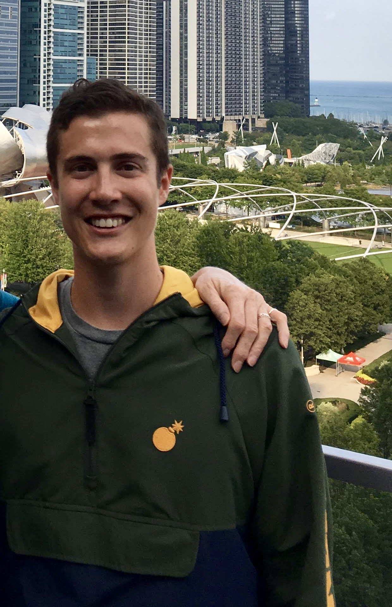

About Me

I'm a growth-minded, enthusiastic, and product-focused professional with experience as an entrepreneur and market researcher. I earned my undergraduate business degree from UNC's Kenan-Flagler Business School then spent 3 years at System1 Research. While working full-time for System1, I tested the waters of entrepreneurship by pursuing a side project starting in early 2016. I directed the development of a customizable app version of the popular game Catchphrase and launched “Words For Us” in Summer 2016. The project revealed to me the many challenges of product development, but bugs in code weren't enough to keep me from catching the entrepreneurship bug. I soon jumped full-time into a new venture, joining my high school friend to co-found Fisher Guiding in Spring 2017. After managing product development for a few years already, I decided at the end of Summer 2019 to start learning coding to add to my entrepreneurial toolkit and perspective on development.
A few of my other passions are playing and watching sports (mostly tennis now after three knee surgeries though basketball and soccer are my first loves), volunteering and working with high schoolers at By The Hand Club For Kids, listening to music during most things I do (thank you Spotify), reading (s/o Goodreads), and writing (been low on my list of priorities but I'm trying to level up to Medium).
I'm grateful to have grown up as a military brat and been raised by parents from mixed backgrounds who encouraged me to explore a range of interests and cultures with curiosity. So far, I've lived in Virginia (1992 - 97, 2006-10); California (1997 - 2000); Okinawa, Japan (2000 - 2003); South Carolina (2003 - 2006), North Carolina (2010 - 2014), and Illinois (2014 - present).
My high school yearbook quote was, "Hate it or love it, the underdog's on top". I'm driven to approach complex problems and be a part of the solution. I'm always interested in meeting, learning from, and working with other passionate people, so please feel free to reach out via email or connect on social.